Cinder was not your average kitten. While other cats in the village of Whiskerton had soft paws and fluffy tails, Cinder had tufts of fiery orange fur that gave way to shimmering, emerald-green scales along his back. He had a long, reptilian tail ending in a tuft of fur, and two small, leathery wings folded tightly against his shoulders.
He was a Dracat—half-cat, half-dragon.
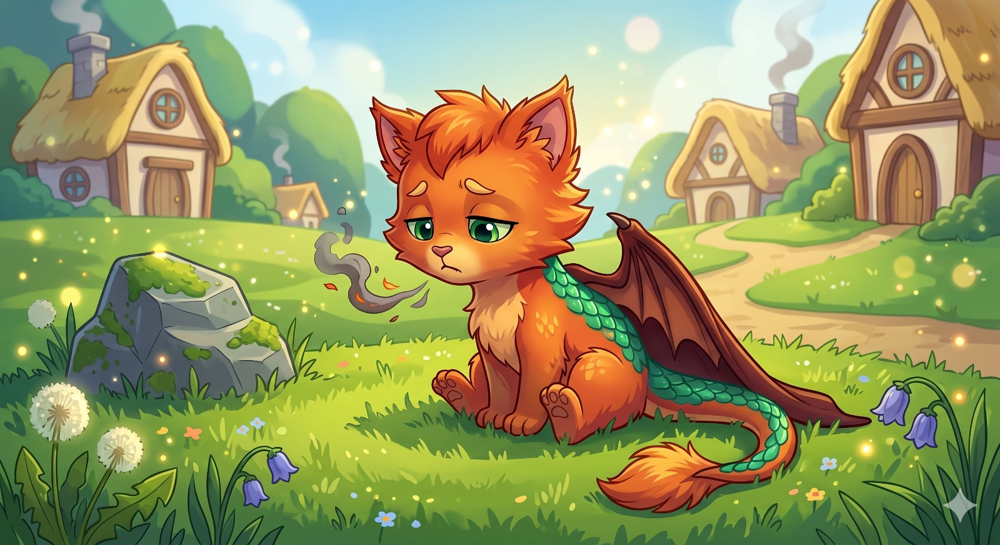
But there was a problem. By their first birthday, every Dracat was supposed to discover their "Spark"—the magical draconic power inherited from their ancestors. Some learned to breathe tiny puffs of lightning; others could turn their scales invisible. Cinder, however, could only cough up ordinary, entirely non-magical hairballs. His wings were completely useless, dragging behind him like an oversized cape.
"Try again, Cinder," a gentle voice encouraged from a nearby rock. "Focus on your belly. Imagine a warm bowl of milk, but, you know... on fire."
This was Spike. Spike was Cinder’s older brother, and he was the best brother a half-dragon kitten could ask for. Spike was much larger, built like a sturdy bulldog with thick, earth-brown scales and a series of impressive, blunt spikes running down his spine.
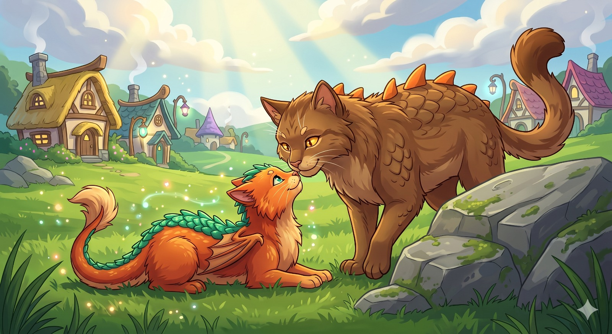
Spike’s Spark was the power over earth; he could make flowers bloom or shape mud into perfectly round balls just by tapping his paws.
Cinder squeezed his slit-pupil eyes shut. He imagined the warm milk. He imagined a roaring hearth. He pushed all the energy he had up his throat, opened his jaws, and—
Squeak.
A tiny wisp of black smoke drifted from his nose, followed by a pathetic sneeze.
Cinder flopped onto his side in defeat. "It’s no use, Spike. I’m just a weird-looking cat. I’ll never get my powers. The Awakening Festival is tomorrow, and I’m going to be the only one who can’t light the ceremonial torches."
Spike hopped off the rock, his heavy paws making a reassuring thump on the grass. He nudged Cinder gently with his snout. "Hey, none of that. You’re a late bloomer, that's all. Mom always said your dragon half is just taking a really long catnap."
"It's in a coma," Cinder grumbled.
"Then we need to wake it up," Spike declared, his golden eyes shining with determination. "If sitting around isn't working, we need an adventure. We’re going to the Sunstone at the peak of Mount Claw."
Cinder’s ears pinned back. "Mount Claw? But that’s where the fierce wind-eagles nest! It’s dangerous!"
"Exactly," Spike said with a toothy grin. "Dragons awaken their powers in the face of a challenge. Cats land on their feet when they fall. Combine the two, and the Sunstone is exactly what you need. Besides, you’re not going alone. I’m coming with you."
The journey up Mount Claw was steep and treacherous. The air grew thin, and the lush forest gave way to jagged, gray rocks. Cinder’s paws ached, but whenever he stumbled, Spike was right there, offering a sturdy spiked shoulder to lean on or using his earth magic to create a flat, muddy step for Cinder to climb.
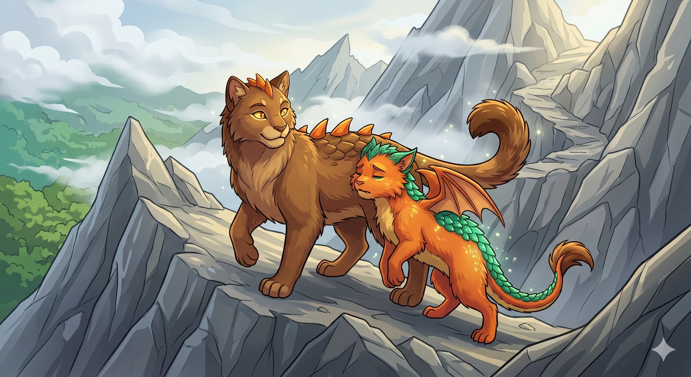
"You're doing great," Spike panted, taking the brunt of the harsh mountain wind to shield his smaller brother. "Just a little further. I can see the peak."
They scrambled over the final ridge. There, resting on a pedestal of ancient rock, was the Sunstone—a massive crystal that hummed with ancient, warm energy.
Cinder approached it tentatively. He placed his paw on the smooth surface. He waited for a surge of magic. He waited for fire to course through his veins.
Nothing happened.
Tears pricked Cinder’s eyes. "It didn't work. I really am broken."
Before Spike could offer comforting words, a massive shadow swept over them. A shrieking cry echoed off the rocks. A Wind-Eagle, twice the size of a full-grown wolf with feathers like silver blades, swooped down from the clouds. It had spotted the intruders in its territory.
"Look out!" Spike yelled. He pushed Cinder behind him and slammed his front paws into the ground. A wall of solid rock shot up from the dirt, shielding them.
The eagle crashed into the rock wall, shattering it with its razor-sharp talons. The impact sent Spike tumbling backward toward the edge of the cliff. He scrambled frantically, his claws scraping the stone, but he slipped over the edge, hanging on by just his front paws.
"Spike!" Cinder screamed.
The wind-eagle circled, preparing for a final dive to knock Spike into the abyss.
Cinder was terrified. Every feline instinct told him to run, to hide under a rock and make himself small. But as he looked at his brother—the brother who had never given up on him, who had climbed a mountain just to make him feel better—a different instinct took over.
A deep, unfamiliar heat bloomed in Cinder’s chest. It wasn't a warm bowl of milk. It was a volcano waking up.
As the eagle dove toward Spike, Cinder didn't hide. He leaped into the air, placing himself directly between the massive bird and his brother. The feline grace of his leap was sudden, but what happened next was pure dragon.
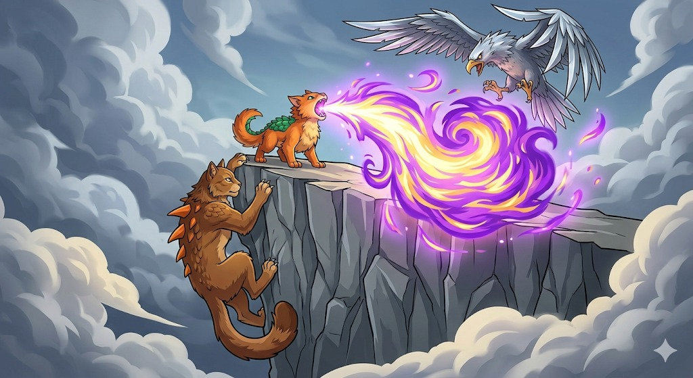
Cinder’s lungs expanded. He opened his jaws and let out a roar that sounded like a lion crossed with a thunderstorm. A blinding, magnificent burst of purple-and-gold fire erupted from his mouth, swirling like a galaxy!
The fire didn't burn the eagle, but the sheer force and dazzling light of it sent the massive bird squawking in panic. It flapped its wings wildly, abandoning the attack and fleeing back into the clouds.
Cinder landed on the ground, panting heavily, smoke drifting lazily from his nostrils.
"Whoa," a voice gasped.
Cinder rushed to the edge of the cliff. Spike was pulling himself up, his eyes wide with awe. "Did you see that?" Spike laughed, hauling himself over the ledge. "Purple fire! That is so much cooler than lightning or invisible scales! I told you it just needed a wake-up call!"
Cinder looked down at his paws, then let out a delighted, smokey purr. "I did it... I really did it!"
"You saved my life, little brother," Spike said softly, pulling Cinder into a tight, scaly hug.
"Only because you were brave enough to bring me here," Cinder replied, leaning into his brother.
As they turned to head back down the mountain, Cinder felt a strange twitching on his back. He gave a little flex, and suddenly, his leathery wings snapped open, catching the mountain breeze. He didn't just have fire; he was ready to fly.
With a joyful yowl that echoed off the peaks, Cinder launched himself into the air, gliding gracefully above the trail. Spike ran beneath him, laughing and chasing his brother's shadow all the way home.
When they returned to Whiskerton, the entire village gathered around. They had seen the bright flash of purple-and-gold fire from the mountain. Waiting for them in the center of the village was Elder Paws, the oldest and wisest Dracat in the land.
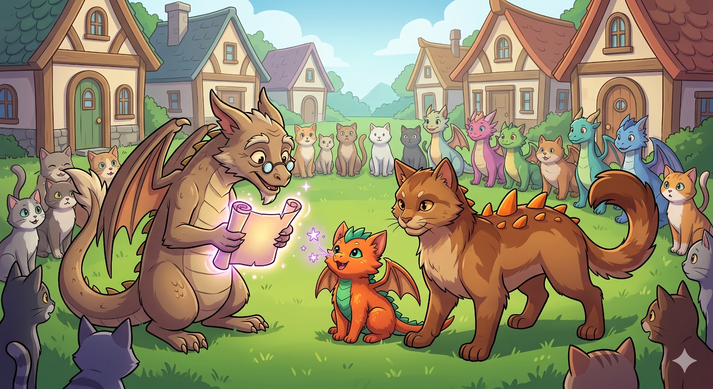
Elder Paws adjusted his tiny spectacles and looked closely at Cinder, who was still puffing tiny, star-like purple sparks from his nose.
"By the Great Scratching Post," Elder Paws whispered, his tail twitching in amazement. "Purple fire... it is exactly as the ancient legends described."
"Is something wrong with him?" Spike asked, stepping protectively in front of his little brother.
"Wrong? My dear boy, everything is exactly right!" Elder Paws chuckled. "Cinder is no ordinary Dracat. He is an Omni-Drake! Only one in a thousand Dracats is born with this special Spark."
Cinder tilted his head, his ears perked up. "An Omni-Drake? What does that mean? Can I learn all the magic?"
"Better than that," Elder Paws explained, unrolling the glowing scroll. "You don't just learn the elements, Cinder. You transform into them. But these different versions of yourself are locked deep inside your dragon heart. Mount Claw was your first test, and it unlocked your Base Fire Form. But to unlock the others, you must travel to the most dangerous places in the world."
Elder Paws pointed a wrinkled paw at the symbols on the scroll. "To unlock your Water Form, you must swim to the Heart of the Ocean. For your Earth Form, you must dig to the Deep Roots. For Wind and Lightning, you must fly directly into the Eye of the Storm. And to master the rarest power of all—Space Portals and Teleportation—you must find the Cosmic Peak."
Cinder and Spike looked at each other, their jaws dropping. Cinder wasn't broken at all. He was meant to be the ultimate shape-shifting dragon-cat!
That night, Cinder could hardly sleep. He kept imagining what his other forms would look like. Would his Water Form have shiny blue scales and webbed paws for super-fast swimming? Would his Earth Form be huge and armored in crystals, like Spike's spikes?
The next morning, Spike had already packed two giant saddlebags. One was filled with dried fish, and the other was filled with Spike's favorite mud-cakes for snacking.
"Elder Paws gave us this," Spike said, pulling out a large piece of parchment that crackled with magic. It was the Elemental Map.
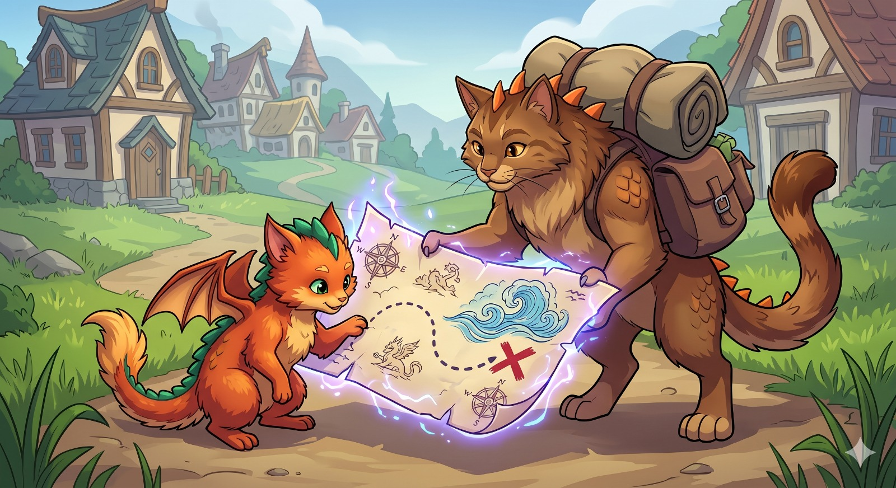
"So, where do we go first?" Spike asked, adjusting the heavy saddlebags on his strong, spiky back.
Cinder traced a claw along the dotted line heading south, right toward a swirling drawing of blue waves and a giant red X.
"The Heart of the Ocean," Cinder declared.
"Oh boy. I hope your Water Form likes swimming, because my Earth magic is basically just going to make me sink like a stone," Spike chuckled.
"Don't worry," Cinder smiled, feeling a spark of purple fire warm his chest. "I'll carry you if I have to. We're in this together."
Side by side, the sturdy earth-dragon and the fiery, shape-shifting kitten took their first steps out of the village. The journey to unlock the Water, Earth, Wind, Lightning, and Space forms had officially begun.
After days of walking, the brothers arrived at a sparkling, crystal-clear cove. In the very center, resting on a pedestal made of rainbow coral, was a massive glowing blue gem. It pulsed like a heartbeat, sending gentle ripples across the water. It was the Heart of the Ocean.
"There it is!" Cinder cheered, taking a step toward the water.
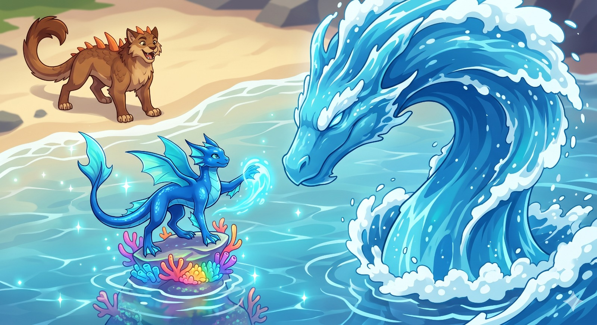
But before his paw could even touch the wet sand, the cove erupted! The water churned into a massive whirlpool, and a towering Sea Serpent made entirely of crashing waves and sea foam rose into the sky. It roared, a sound like a terrible thunderstorm over the ocean. It was the Guardian of the Sea, and it was not going to let them take the Heart easily.
The Serpent swung its massive, watery tail, sending a tidal wave crashing toward the beach.
"Get behind me!" Spike roared. He slammed his front paws into the sand. A gigantic wall of solid rock and earth shot up from the beach, catching the tidal wave with a loud CRASH!
Cinder leaped on top of the rock wall and tried to use his magic. He opened his mouth to blast his purple-and-gold fire, but the heavy sea spray instantly fizzled it out into tiny, harmless sparks.
"My fire won't work here!" Cinder yelled over the roaring water.
"You have to reach the crystal!" Spike strained, holding the rock wall steady against another attack from the Serpent. "Use your cat skills!"
Cinder didn't hesitate. Using his incredible feline agility, he leaped from the rock wall. He bounced across the floating pieces of driftwood, dodged a snapping watery jaw, and did a magnificent flip right over the Guardian's head. With a graceful landing, he touched down on the coral pedestal and placed both paws directly onto the Heart of the Ocean.
A blinding flash of cyan light exploded across the cove!
The magic of the ocean rushed into him. Cinder's fluffy orange fur instantly smoothed out into shiny, sleek sapphire scales. His leathery wings transformed into elegant, translucent fins that rippled like water. His paws grew webbing perfect for swimming, and his tail turned into a powerful rudder.
He had unlocked his Water Form!
Cinder turned to face the angry Sea Serpent. Instead of attacking with fire, Cinder let out a deep, burbling purr that echoed through the water. He swiped his webbed paw, and the magic of the Heart responded. The churning whirlpool instantly slowed. The massive waves flattened out. The angry Serpent of water stopped in its tracks, looking at Cinder's new form.
Recognizing Cinder as the true master of the Heart, the Guardian bowed its watery head in respect, then gently melted back into the calm, glassy sea.
"Whoa!" Spike cheered, lowering his rock wall and running to the edge of the water. "You look like a flying fish-cat! That was incredible!"
Cinder looked down at his beautiful blue scales. He closed his eyes, pictured a warm hearth, and with a soft Poof!, he was fluffy and orange again. He pictured the rushing ocean, and Splash!, he was blue and aquatic.
"I can switch!" Cinder laughed happily, doing a little dance on the beach in his original fire form. "One element down, four to go! Next stop... the Deep Roots!"
According to the map, the Deep Roots were hidden far beneath a giant, ancient forest. When Cinder and Spike finally found the entrance, they had to climb down a massive, twisting tunnel.
At the bottom, they stepped into a breathtaking underground world. Giant tree roots the size of houses crisscrossed the cavern, glowing with soft, green moss. Right in the center, resting on a pedestal of solid emerald, was the Rootstone.
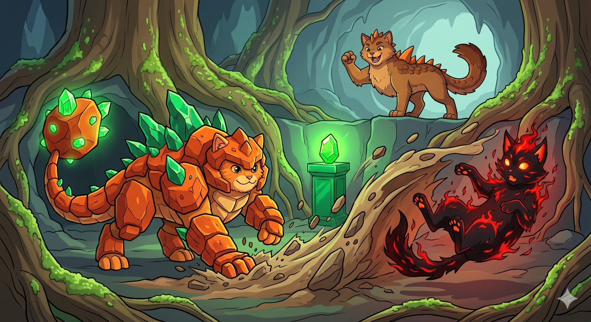
But as Cinder stepped forward, all the glowing moss suddenly flickered and died. The cavern went completely dark.
"Going somewhere, little kitten?" a cold, smooth voice echoed from the dark.
From behind a giant root stepped a terrifying Shadow Veiling Cat. His body was made of dark, burning fire! Black shadows and crimson flames danced along his fur, and his eyes glowed like the hottest coals.
"Who are you?" Spike demanded, stepping in front of Cinder and bearing his flat, earthy teeth.
"I am Grimalkin," the fiery shadow-cat purred, flexing claws that looked like glowing embers. "And I know what your little brother is. An Omni-Drake. The ultimate magic wielder. Well, I want that magic for myself! If I stop him from touching the Rootstone, I can steal its power!"
With a nasty hiss, Grimalkin swiped his paw. A wave of scorching dark flames and burning shadows shot across the ground, flying straight at Cinder!
"Cinder, switch!" Spike yelled.
Cinder closed his eyes and thought of the ocean. Splash! He instantly turned into his blue, sleek Water Form. He used his webbed paws to slide gracefully across the damp moss, dodging the dark flames like a slippery fish.
While Grimalkin was distracted trying to scorch the slippery water-cat, Spike slammed his paws into the dirt, launching a giant ball of wet mud right into Grimalkin's fiery face! The mud sizzled loudly, blinding the villain for a second.
"Now, Cinder!" Spike yelled.
Cinder dove onto the emerald pedestal. He placed his wet, webbed paws onto the glowing green Rootstone.
A massive CRACK echoed through the cavern, followed by a brilliant flash of emerald light!
When the light cleared, Cinder had transformed again. His blue scales were gone, replaced by heavy, armor-like plates of dark green rock. His fins had turned into jagged emerald spikes that grew out of his back, and his tail was now a heavy, solid boulder covered in glowing crystals.
He had unlocked his Earth Form!
Grimalkin wiped the sizzling mud from his fiery eyes just in time to see the new, heavy-duty Cinder.
Cinder raised his heavy, rock-armored paw and slammed it into the ground. BOOM! The entire cavern shook. A wave of earth rolled across the floor like a carpet, knocking Grimalkin right off his paws.
"You haven't seen the last of me, Omni-Drake!" Grimalkin screeched. Realizing he was outmatched by two earth dragons in a cave, the Shadow Veiling Cat burst into a cloud of dark smoke and burning embers, scurrying away like a frightened mouse.
"Whoa," Spike breathed, looking at Cinder's rocky armor. "You look like me now!"
Cinder bumped his heavy crystal head against Spike's spiky shoulder. "Two forms down, three to go. The Shadow-Cat won't stop us!"
Following the magical map, the brothers left the underground forest and climbed the tallest, steepest mountain in the land: The Cloud-Piercing Peak. At the very top, a massive, swirling tornado made of dark purple clouds and bright yellow lightning spun wildly in the sky.
Hovering right in the peaceful, silent center of the tornado—the Eye of the Storm—was a crackling, glowing orb of pure electricity. The Storm Core.
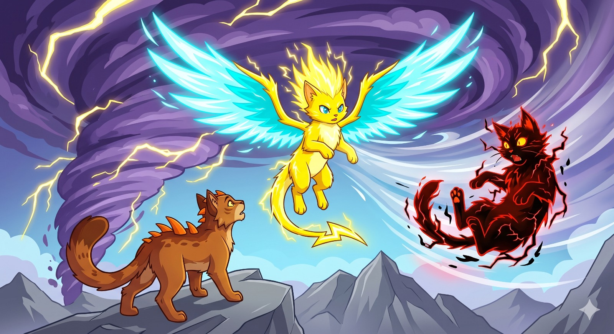
"How are we supposed to get through that wind?" Spike yelled over the roaring gale, his earth-brown scales getting pelted by rain.
"You aren't!" hissed a familiar, sinister voice.
Dropping down from the dark clouds above was Grimalkin. The Shadow Veiling Cat looked even scarier in the storm, his dark fire crackling with stolen red lightning.
"I will take the Storm Core, and the sky will belong to me!" Grimalkin cackled. He swiped his claws, sending a volley of burning, red-hot shadow-lightning straight at the brothers!
Spike didn't even blink. He stomped his heavy paws, and a thick dome of solid rock curved over them, blocking the red lightning with a deafening ZAP!
"Cinder, I can't hold this dome forever!" Spike grunted, the rock cracking under Grimalkin's dark attacks. "I'm going to launch you. Get ready!"
Cinder braced his paws. Spike dropped the dome and immediately slammed his tail into the ground. A pillar of earth shot up like an elevator, launching Cinder high into the air, right over Grimalkin's head and straight into the raging tornado!
The wind whipped Cinder around like a leaf, but he reached out with everything he had. He stretched his paw through the howling gale and pressed it against the crackling Storm Core.
KABOOM! A massive thunderclap shook the sky, blinding everyone with a flash of pure white light!
When the light faded, Grimalkin gasped. Cinder was hovering in mid-air, completely transformed! His fur was a bright, electric yellow and stood straight up with static electricity. His tail was shaped like a sharp lightning bolt, and sticking out of his back were two massive wings made of pure, glowing wind and cyan energy.
He had unlocked his Wind and Lightning Form!
Grimalkin growled furiously and launched a massive fireball of dark shadows at Cinder.
But Cinder was too fast. With a single flap of his energy wings, he teleported like a flash of lightning, appearing right behind Grimalkin! Cinder flapped his wings again, creating a gale-force wind so powerful it blew Grimalkin’s dark fire right back at him.
The Shadow Veiling Cat shrieked as the hurricane-force winds caught him, spinning him around and blowing him entirely off the mountain like a dry leaf! "I'll be baaaaaaaack!" his voice faded into the distance.
Cinder floated gently back down to the mountain peak, sparks of electricity dancing off his nose. He pictured his cozy bed, and with a ZAP!, his fluffy orange fur returned.
"That was the coolest thing I've ever seen," Spike said, shaking the rain off his earth-brown scales. "You're a Water-Cat, an Earth-Cat, and a Lightning-Cat now! There's only one place left on the map."
The final stop on their map was the highest point in the entire world: The Cosmic Peak. The climb was so high that the blue sky faded away, leaving them standing under a breathtaking blanket of glowing purple nebulas and twinkling stars, even in the middle of the day.
Floating just inches above the ground at the very top of the peak was the Astral Star. It wasn't a crystal or a stone—it was a literal, tiny, glowing star, humming with the power of the universe.
"We made it," Cinder whispered, his eyes wide as he looked at the beautiful floating light. "The final element."
"And I will be taking it!"
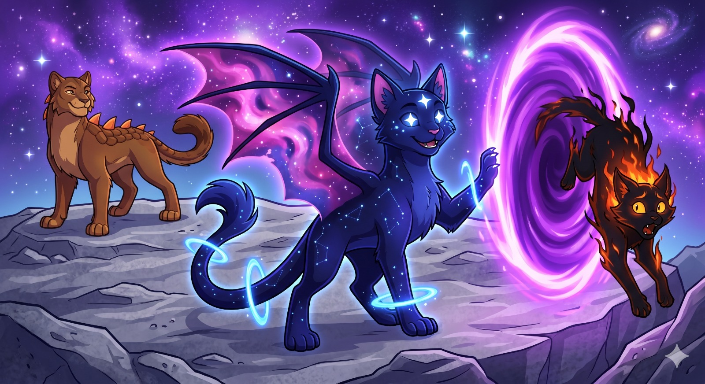
Grimalkin leaped out from behind a moon-rock, panting heavily. His shadow-fire was flickering, and he looked very dizzy from being blown off the last mountain, but his eyes were still burning with greed. He dove straight for the Astral Star, his shadowy claws outstretched!
"Not this time!" Spike roared. He curled his sturdy bulldog body into a tight ball, turning himself into a giant rolling boulder. He zoomed across the peak and bowled right into Grimalkin like a bowling ball hitting a pin!
While Grimalkin was knocked backward, Cinder ran forward and gently booped his nose right against the glowing Astral Star.
ZOOOM! A shockwave of glittering starlight swept across the peak!
When the starlight cleared, Cinder was breathtaking. His fur was the color of deep, midnight space, dotted with glowing constellations. His wings were swirling pink and purple nebulas, and bright rings of energy floated around his tail and paws like the rings of a planet. His eyes shone as bright as two white stars.
He had unlocked his ultimate, rarest power: The Space and Portal Form!
Grimalkin got to his feet, absolutely furious. "It doesn't matter what you look like! The magic will be mine!" The shadow-cat summoned a massive wave of dark, burning fire and lunged straight at Cinder.
Cinder simply smiled. He showed his starry paw, and a swirling purple portal ripped open in the air right in front of Grimalkin.
Grimalkin was running too fast to stop. "Wait, no—!" he yowled, diving headfirst into the portal.
Cinder flicked his tail, and a second portal opened up exactly two feet above the biggest, grossest, smelliest mud puddle Spike had created earlier that morning.
SQUELCH!
Grimalkin dropped straight into the mud. He tried to summon his fiery shadows, but the thick, sticky earth magic glued his paws to the ground, trapping him perfectly in a very embarrassing mud bath.
Cinder closed the portal and floated happily over to his brother. He concentrated, and in a rapid flash of colorful light, he shape-shifted perfectly. He went from his Starry Space Form, to his Sleek Water Form, to his Armored Earth Form, to his Electric Wind Form, and finally settled back into his original, fluffy Orange Fire Form.
"You really are the Omni-Drake," Spike said proudly, putting an arm around his little brother. "I always knew you were special."
"I couldn't have unlocked any of them without the best Earth-Dragon brother in the world," Cinder purred. "Now, how about we portal home? I think we've had enough walking for one day."
With a happy flick of his tail, Cinder opened a shimmering purple doorway straight to their cozy living room in Whiskerton. Together, the two brothers stepped through, ready for whatever adventure awaited them next.
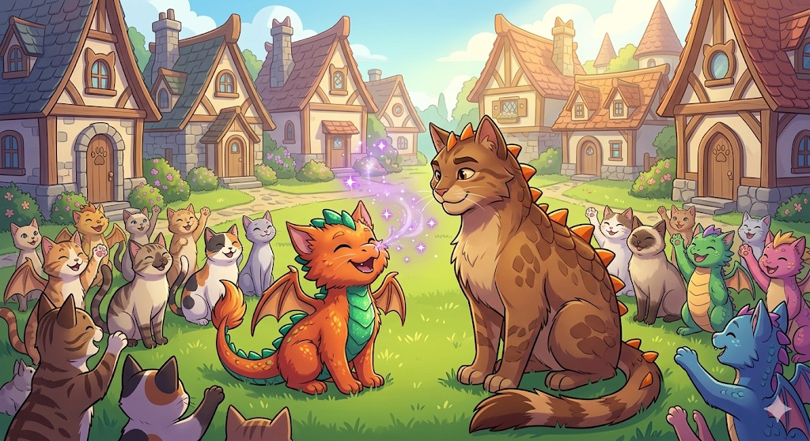